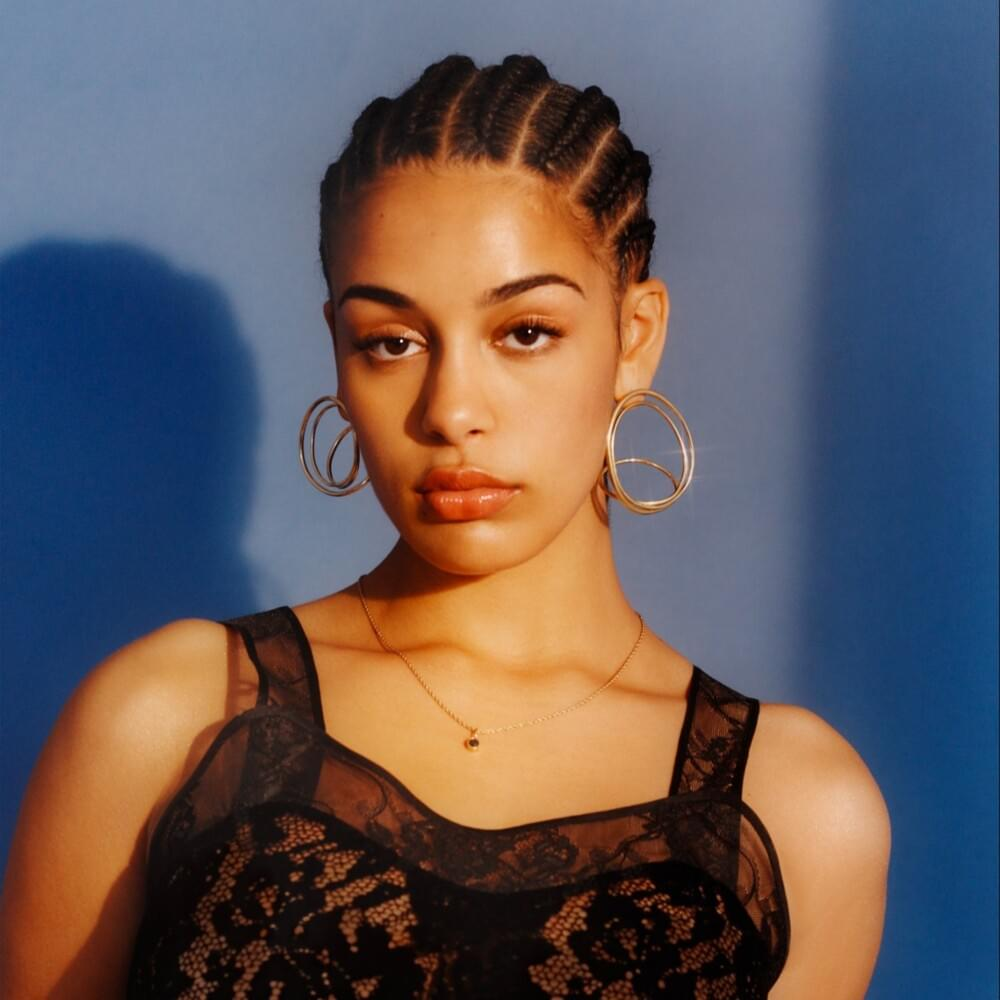

Blue Lights
Jorja Smith
“Blue Lights” is the debut single from Jorja Smith. The song is questioning why you should have a… Read more
 Verified commentary Jorja Smith[Intro] I wanna turn those blue lights into strobe lights Not blue flashing lights, maybe fairy lights Those blue lights into strobe lights Maybe even fairy lights, not blue flashing lights
[Verse 1] Don't you run when you hear the sirens coming When you hear the sirens coming You better not run 'cause the sirens not coming for you What have you done? You went to school that day Was a bit late but it was a Monday Kept after class for answering back You apologized, ain't no harm in that?
[Chorus] (I wanna turn those blue lights) What have you done? (Into strobe lights) There's no need to run (Not blue flashing lights) If you've done nothing wrong (Maybe fairy lights) Blue lights should just pass you by
[Verse 2] Gun crime into your right ear Drugs and violence into your left Default white headphones flooding the auditory Subconscious waves you accept You're sitting on the 4 back home "Where you at, G? Answer your phone!" Paused the poison to answer his message Your boy sounds rushed, fears for his adolescence
[Chorus] (I wanna turn those blue lights) What have you done? (Into strobe lights) There's no need to run (Not blue flashing lights) If you've done nothing wrong (Maybe fairy lights) Blue lights should just pass you by
[Verse 3] Tall black shadow as you're getting off the bus Shadow shows no emotion so what's even the fuss? But the face on your boy casts a darker picture Of the red handed act, he's gonna whisper; "Look blud, I'm sorry, 'cause I know you got my back He was running, I couldn't think, I had to get out of that" Not long ago you were miming to the "Shook Ones" Now this really is part two 'cause you're the shook one Hands you the tool as you question your friendship How's man like you gonna make me a convict? Level of a felon when I've done nothing wrong Blood on my hands but I don't know where it's from, oh You got blood on your hands but you don't know where it's from
[Bridge] You better run when you hear the sirens coming When you hear the sirens coming Better run when you hear the sirens coming 'Cause they will be coming for you Run when you hear the sirens coming Better run when you hear the sirens coming When you hear the sirens coming The blue lights are coming for you
[Chorus] (I wanna turn those blue lights) What have you done? (Into strobe lights) There's no need to run (Not blue flashing lights) If you've done nothing wrong (Maybe fairy lights) Blue lights should just pass you by
[Outro: Jorja Smith & Dizzee Rascal] "Blud, when you hear the sirens coming" Don't you run when you hear the sirens coming "Blud, when you hear the sirens coming" Don't you run when you hear the sirens coming What have you d-d-d-done done Don't you run Don't you run Don't you run when you hear the sirens coming
Music video
Genius video
Ask us a question about this song
What inspired this song?
Jorja Smith: When I wrote “Blue Lights,” I took a break from doing my media course work. I was looking at post-colonialism in grime music. A video I was watching was Dizzee Rascal’s “Sirens.” I was inspired to write this song. I was listening to some beat in my room, and I found this one, called “Jamie Keys” produced by Joyce. That’s who produced “Blue Lights.” I just started free styling it. Also I wrote this song because I was talking to loads of young kids. Part of my coursework was to do a little documentary, and I was looking at police versus grime music. I just went around interviewing kids at school asking them what they thought of the police. These little boys, mostly it was black kids that I was interviewing, people of color. Well everyone, but that was the main focus. These 11-year-olds, I was like, “Oh, what do you think of the police?” They were like, “Fuck the police! I hate them.” And I was like, “What have you done?” “Nothing, but I hate them,” And I was like, “It’s sad,” you know?It’s sad because we’re kind of … It’s instilled in us to have, well fear the police. You know? That’s what I was writing the song about. And it was about walking around with this guilty conscience, even though you haven’t done anything wrong.
More on Genius
Ari Lennox Breaks Down The Meaning Of “BMO”
Ari Lennox Breaks Down The Meaning Of “BMO”
Ari Lennox Breaks Down The Meaning Of “BMO”
Ari Lennox Breaks Down The Meaning Of “BMO”
Ari Lennox Breaks Down The Meaning Of “BMO”
"Blue lights" track info
| Produced by | Engine Earz & Joice |
|---|---|
| Written by | Joice, Nicholas Detnon, Dizzee Rascal |
| Keyboard | Hai Ritson & Richard Adlam |
- Lost & Found
- Teenage Fantasy
- Where Did I Go?
- February 3rd
- On Your Own
- The One
- Wandering Romance
- Blue Lights
- Lifeboats (Freestyle)
- Goodbyes
- Tomorrow
- Don't Watch Me Cry
Song comments
‘'Not long ago you were miming to the “Shook Ones” Now this really is part two cause you’re the shook one’' BRUUUUUHHHHHHHHHH
This is hot! She skilled it.
Home J Jorja Smith Blue Lights Lyrics